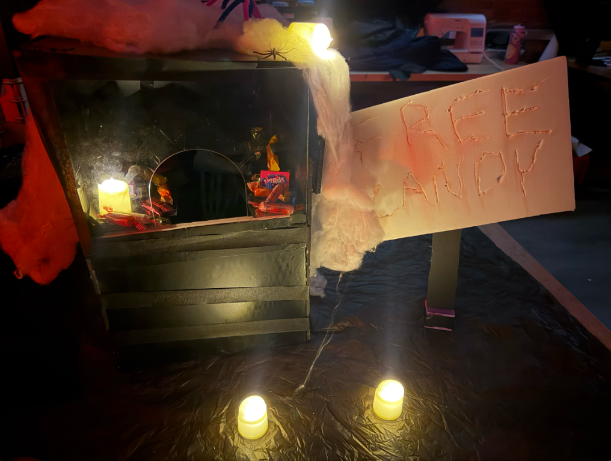

This interactive Halloween contraption is presented as a “Free Candy” box. Built with LEGO SPIKE Prime and programmed in MicroPython, it uses a distance sensor to detect an approaching hand and trigger a mechanical skeleton hand to move out and return to its resting position.
A distance sensor connected to port D monitors the inside of the box. The program checks the sensor every 50 milliseconds and triggers the sequence when an object is detected within 100 mm.
Motors on ports A and B are paired so they move together. The paired motors make a fast 90-degree strike at 1050 degrees per second, pause for 500 milliseconds, then retract at 200 degrees per second. The program also runs an action on the motor connected to port E.
from hub import port
import runloop
import distance_sensor
import motor
import motor_pair
# Set the motor speed in degrees per second.
SPEED = 360
async def main():
motor_a_init = motor.absolute_position(port.A)
# Pair motors on port A and B
motor_pair.pair(motor_pair.PAIR_1, port.A, port.B)
while True:
while True:
# Poll distance sensor; trigger if an object is within 100mm
if (distance_sensor.distance(port.D) != -1 and distance_sensor.distance(port.D) <= 100):
break
await runloop.sleep_ms(50)
# Trigger auxiliary action and rapid strike sequence
motor.run_for_degrees(port.E, 360, 300)
await motor_pair.move_for_degrees(motor_pair.PAIR_1, -90, 0, velocity=1050)
await runloop.sleep_ms(500)
# Slow controlled reset
await motor_pair.move_for_degrees(motor_pair.PAIR_1, 90, 0, velocity=200)
runloop.run(main())